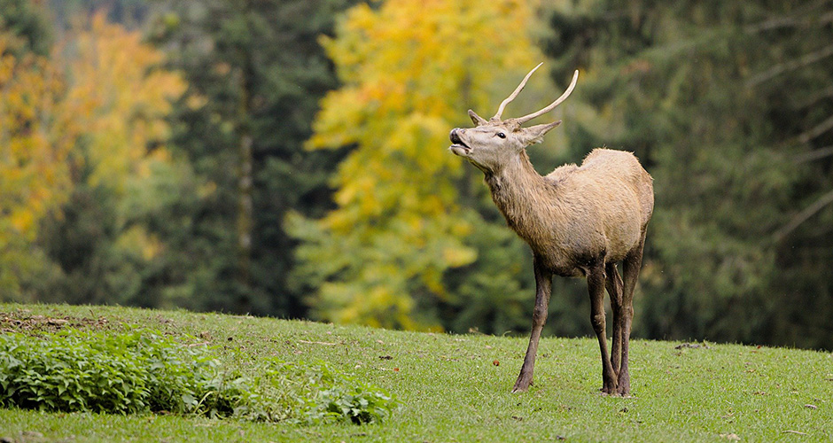
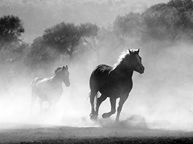
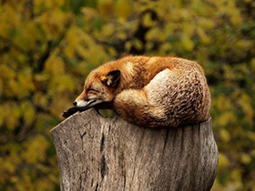

Nippon National Park in Japan are places of scenic beauty designated for protection and sustainable usage by the Minister of the Environment under the Natural Parks Law (自然公園法) of 1957.[1] National Parks are designated and in principle managed by the Ministry of the Environment. Quasi-National Parks, of a slightly lesser beauty, size, diversity, or state of preservation, are recommended for ministerial designation and managed by the Prefectures under the supervision of the Ministry.
Photo
owl

horse

fox